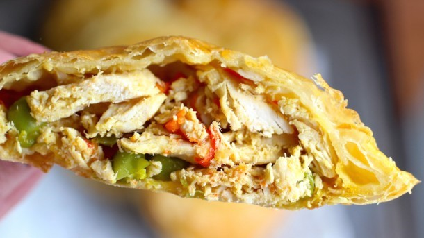

Donde nada es imposible
Favoritos

Historial
- Prepara ricos nuggets homemade
- Deliciosa pasta en unos sencillos pasos
- Prepara la mejor lechona colombiana
- La forma más sencilla de hacer Tiramisú
- Arroz con leche estilo Colombia
- Como hacer galletas cuca
- La mejor receta de Cupcakes
- Comida tipica de Colombia
- Exquisito jugo de calabaza
- Suculenta sangría de pumpkin pie
Pasteles de pollo con verdura
Enero 04 del 2018
Los pasteles de pollo son un aperitivo popular en las panaderías colombianas, las cafeterías escolares y cafés. Estos pasteles de pollo se hacen con masa de hojaldre y rellenos de pechuga de pollo desmenuzado, especias y verduras, y se sirve con salsa de ají o salsa aguacate. Se pueden comer para el desayuno, el almuerzo o la merienda y también se sirven en las fiestas como aperitivo en una versión miniatura.Estos pasteles también se pueden hacer con los restos de pollo asado de una comida anterior o con pavo.
Ver másDeja aquí tu comentario:
PublicarFabian10: Preparar estos pasteles son una verdadera delicia y acompañarla con gaseosa, uff! eso si es delicioso

Floresillarockera: Me encanta tu blog, gracias por subir está fabulosa receta
Coctel de camarones
Enero 05 del 2018
También es conocido como Ceviche Colombiano. Este coctel de camarones, sin embargo, es sencillamente delicioso. La combinación de la salsa de tomate, la mayonesa, el jugo de limón verde y el agua de ajo va muy bien con el camarón. Por eso no me extraña que esta sea una de las comidas más populares que se consiguen en las playas colombianas, o en este caso, en la comodidad de sus propias casas.
Ver másDeja aquí tu comentario:
PublicarMary211012: Oh! Realmente delicioso, muchas gracias por compartir la receta